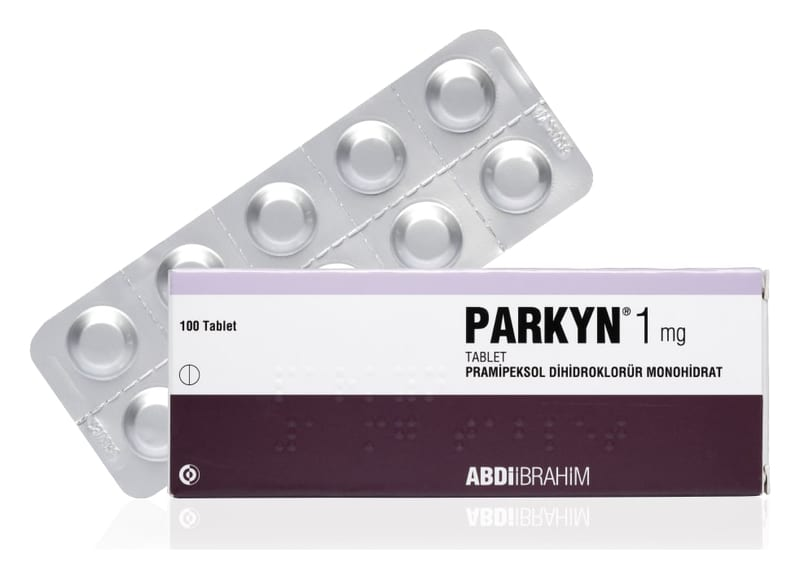

Parkyn 1 mg Tablet, 100 Adet

Ne için kullanılır
KT · Bölüm 1PARKYN tablet formunda üretilmektedir. 1 mg tablet, beyaz renkli, iki yüzü çentikli yuvarlak tablettir. PARKYN 1 mg tablet, 100 tablet içeren blister ambalajlarda piyasaya sunulmaktadır.
PARKYN’in etkin maddesi olan pramipeksol, dopamin agonistleri adı verilen bir ilaç grubuna aittir. Dopamin agonistleri beyinde dopamin reseptörlerini (algılayıcılarını) uyarır. Dopamin reseptörlerinin uyarılması beyindeki sinir iletilerini tetikleyerek vücut hareketlerinin kontrol edilmesine yardımcı olur.
PARKYN; • Erişkinlerde, primer Parkinson hastalığının belirtilerinin tedavi edilmesi için kullanılır. Tek başına veya levodopa (Parkinson hastalığında kullanılan bir başka ilaç) ile birlikte kullanılabilir. • Erişkinlerde orta ila şiddetli Huzursuz Bacak Sendromunun belirtilerinin tedavi edilmesi için kullanılır.